KANATA ユーザーガイド TradingView ライクな株式チャート Windows ネイティブアプリの使い方
1インストール方法
動作環境
- OS: Windows 11（64ビット）
- ネットワーク接続（株価データ・マクロ指標取得のため必須）
インストール手順
- 配布された
KANATA Terminal Setup x.x.x.exeをダブルクリックして実行します。 - ユーザーアカウント制御（UAC）のダイアログが表示された場合は「はい」をクリックします。
- インストールウィザードが起動します。
- インストール先フォルダを任意のパスに変更できます（デフォルトのまま推奨）。
- 「インストール」ボタンをクリックしてインストールを開始します。
- インストール完了後、デスクトップとスタートメニューに「KANATA Terminal」のショートカットが作成されます。
- ショートカットをダブルクリックしてアプリを起動します。
注意: 初回起動時は Python バックエンドの準備に数秒かかります。上部バーのステータスが「LIVE」（緑）になるまでお待ちください。
2基本の使い方
2.1 起動と初期画面
アプリを起動すると、以下の3パネル構成の画面が表示されます（既定の「チャート」表示モードの場合）。
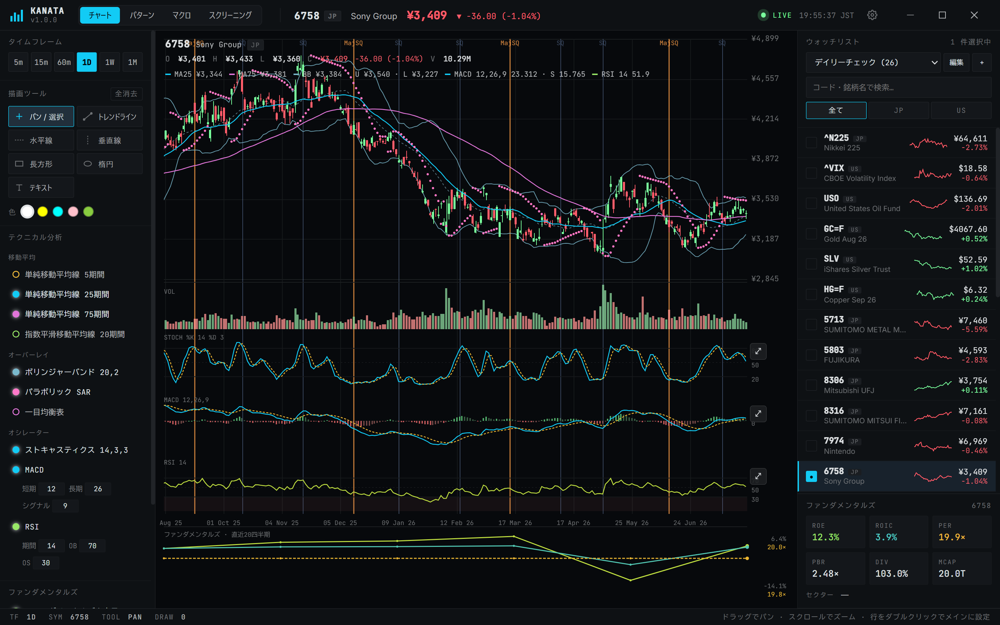
各エリアの配置を模式図で示すと次のようになります。
┌──────────────────────────────────────────────────────────┐
│ 上部バー — ブランドロゴ・表示モードタブ・現在値・ステータス│
├─────────────┬────────────────────────────┬───────────────┤
│ 左パネル │ メインチャート │ 右パネル │
│ 時間軸 │ │ ウォッチリスト│
│ 描画ツール │ ローソク足・指標表示 │ 銘柄リスト │
│ テクニカル │ │ 検索・フィルタ│
│ 指標設定 │ │ 基本情報 │
├─────────────┴────────────────────────────┴───────────────┤
│ 下部ステータスバー — 時間軸・銘柄・ツール情報 │
└──────────────────────────────────────────────────────────┘上部バーのステータス表示の意味：
| 表示 | 色 | 意味 |
|---|---|---|
| LIVE | 緑 | バックエンド接続中・データ取得可能 |
| LOADING | 琥珀色 | データ読み込み中 |
| ERROR | 赤 | 接続エラー（ネットワーク確認が必要） |
| — | グレー | 未接続 |
2.2 表示モードの切り替え
上部バーのブランドロゴ右にある4つのタブで、画面全体の表示モードを切り替えられます。選択状態は自動的に保存され、次回起動時も同じモードで開きます。
| タブ | 内容 |
|---|---|
| チャート | ローソク足チャート + テクニカル指標 + 描画ツール（既定） |
| パターン | ローソク足パターンの自動検出・一覧表示（6. パターン分析） |
| マクロ | マクロ経済指標ダッシュボード（7. マクロダッシュボード） |
| スクリーニング | N字パターンによる銘柄スクリーニング（8. スクリーニング） |
2.3 ウォッチリストへの銘柄登録
新しいウォッチリストを作成する
- 右パネル上部の「+」ボタンをクリックします。
- 入力フィールドにリスト名を入力します（例：「日本株」「米国テック」）。
- Enter キーまたは「OK」ボタンで確定します。
銘柄を追加する
- 右パネルの「Edit」ボタンをクリックして編集モードに切り替えます。
- 上部に表示された入力フォームに銘柄コードを入力します。
- 日本株: 4桁の数字（例：
7203、9984） - 米国株: 1〜6文字の英字（例：
AAPL、MSFT、NVDA）
- 日本株: 4桁の数字（例：
- 3文字以上入力すると候補リストが表示されます。クリックまたは矢印キー + Enter で選択します。
- 候補が出ない場合も、コードを直接入力して確定できます。
- 「Edit」ボタンを再度クリックして編集モードを終了します。
銘柄を削除する
- 「Edit」ボタンで編集モードに切り替えます。
- 削除したい銘柄行の右端に表示された「×」ボタンをクリックします。
スクリーニング結果から銘柄を追加する
8. スクリーニング の結果一覧から銘柄を選ぶと、その銘柄がウォッチリスト外でも一時的にチャート表示できます。右パネルに表示される「＋リストに追加」ボタンをクリックすると、現在のウォッチリストに正式に追加されます（すでに追加済みの場合はエラーメッセージが表示されます）。
2.4 銘柄の選択とチャート表示
銘柄を選択してチャートを表示する
- 右パネルの銘柄リストから、チャートで見たい銘柄をクリックします。
- 選択した銘柄のデータがメインチャートに表示されます。
複数銘柄を比較する
- 銘柄リストの各行をクリックするたびに選択が切り替わります。
- 最大6銘柄まで同時に選択できます。
- 最初に選択した銘柄（プライマリ）のローソク足が表示され、追加銘柄は折れ線グラフで重ねて表示されます。
比較表示の仕様（変化率モード）
追加銘柄の折れ線は絶対株価ではなく、表示範囲の左端を基準（0%）とした上昇率・下落率で描画されます。そのため、株価水準が異なる銘柄（例：¥17,000 台と ¥10,000 台）でも、同期間の値動きが似ていれば折れ線の高さが近くなります。比較モードは設定パネル（上部バーの歯車アイコン「設定」）の「比較モード」で 変化率（上昇率比較）または 比較を非表示 を切り替えられます。詳細は 9. 設定パネル を参照してください。
プライマリ銘柄を変更する
- 銘柄行をダブルクリックすると、その銘柄がプライマリ（先頭）に設定されます。
時間軸を切り替える
左パネルの「タイムフレーム」セクションから、見たい時間軸のボタンをクリックします。
| ボタン | 時間軸 |
|---|---|
| 5m | 5分足 |
| 15m | 15分足 |
| 60m | 60分足（1時間足） |
| 1D | 日足 |
| 1W | 週足 |
| 1M | 月足 |
チャートの操作（パン・ズーム）
| 操作 | 動作 |
|---|---|
| チャート上でドラッグ | 時間軸の左右移動（パン） |
| マウスホイール上回し | ズームイン（拡大） |
| マウスホイール下回し | ズームアウト（縮小） |
3各エリア・ボタンの機能
3.1 上部バー（Top Bar）
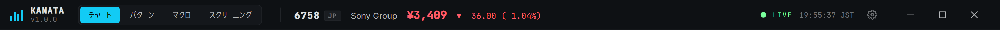
| 要素 | 機能 |
|---|---|
| KANATA ロゴ・バージョン | ブランドロゴ・バージョン表示 |
| 表示モードタブ | チャート / パターン / マクロ / スクリーニング の切り替え（2.2） |
| 銘柄コード | 選択中のプライマリ銘柄（チャート表示時のみ） |
| O / H / L / C | 始値 / 高値 / 安値 / 終値 |
| +xx.xx (+x.xx%) | 前日比（価格・割合）。上昇時は緑、下落時は赤で表示 |
| ステータス | バックエンドの接続状態（LIVE / LOADING / ERROR）+ 現在時刻（JST） |
| 歯車アイコン（設定） | 設定パネルを開閉する（9. 設定パネル） |
| ウィンドウ操作ボタン | 最小化 / 最大化・元に戻す / 閉じる（フレームレスウィンドウ用の独自ボタン） |
3.2 左パネル
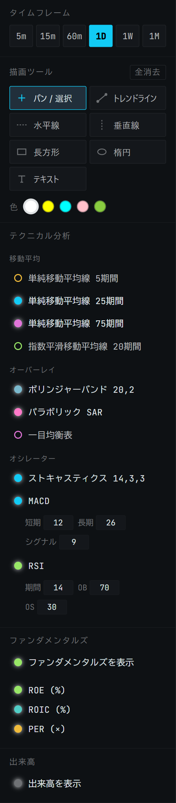
タイムフレーム
5m / 15m / 60m / 1D / 1W / 1M の6ボタン。クリックでチャートの時間軸を切り替えます。現在選択中の時間軸は背景色で強調されます。
SQ・ウィッチング日のマーカー表示は 1D（日足）でのみ有効です。表示/非表示は 9. 設定パネル から切り替えます。
描画ツール
| ボタン | 操作方法 |
|---|---|
| パン / 選択 | ドラッグでチャートをスクロール（デフォルト）。既存の描画をクリックすると選択、ドラッグで移動できる |
| トレンドライン | ドラッグで始点〜終点を結ぶ直線を引く |
| 水平線 | クリックした価格に水平の破線を引く |
| 垂直線 | クリックした時点に垂直の破線を引く |
| 長方形 | ドラッグで半透明の矩形エリアを描く |
| 楕円 | ドラッグで楕円を描く |
| テキスト | クリック後、テキストを入力して注釈を追加する |
| 全消去 | すべての描画オブジェクトを一括削除する |
ツールをクリックして有効化すると、チャート上の操作がそのツールの動作に切り替わります。もう一度クリックすると「パン / 選択」モードに戻ります。
描画の色を選ぶ
ツール一覧の下に「色」という行があり、5色の丸いスウォッチボタンから新しく描く図形の色を選べます。選択した色は次に描画する図形すべてに適用されます。
既存の図形の色を変更する方法は 5. 描画ツール を参照してください。
テクニカル分析
各指標左のドットをクリックしてオン/オフを切り替えます。点灯しているものが有効です。詳細は「4. テクニカル指標」を参照してください。
ファンダメンタルズ
- ファンダメンタルズを表示 トグル: チャート下部にファンダメンタルズパネルを表示/非表示します。
- 有効時は ROE / ROIC / PER の表示チェックボックスが現れます。
出来高
- 出来高を表示 トグル: チャート下部に出来高バーを表示/非表示します。
3.3 メインチャート
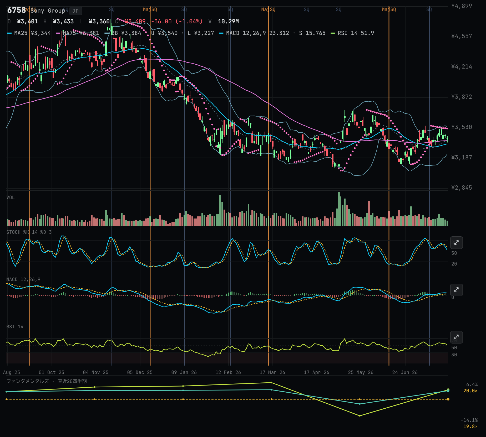
チャート構成（上から順に表示）
メインチャート（ローソク足 + 移動平均線 + オーバーレイ指標 + SQ/ウィッチングマーカー）
出来高 [「出来高を表示」が有効な場合]
ストキャスティクス [「ストキャスティクス 14,3,3」が有効な場合]
MACD [「MACD」が有効な場合]
RSI [「RSI」が有効な場合]
ファンダメンタルズ [「ファンダメンタルズを表示」が有効な場合]チャート左上の情報（Legend）
カーソル位置または最新バーの OHLC 値と各指標の現在値が表示されます。
銘柄コード
O: 始値 H: 高値
L: 安値 C: 終値（色付き） 変動幅
V: 出来高
[各指標の現在値]SQ・ウィッチング日マーカー
日足（1D）表示時、SQ（第2金曜・日本株）やダブル/クアドルプル・ウィッチング（第3金曜・米国株）に該当するバーに縦線が引かれます。四半期に該当するメジャーSQ／クアドルプル・ウィッチングは太い線、それ以外は細い線で区別されます。該当バーにカーソルを合わせると名称がツールチップで表示されます。表示/非表示は 9. 設定パネル から切り替えます。
カーソル操作
- チャート上にマウスを乗せると十字カーソル（クロスヘア）が表示されます。
- 縦軸右端に価格、横軸下端に日時がリアルタイムで表示されます。
3.4 右パネル
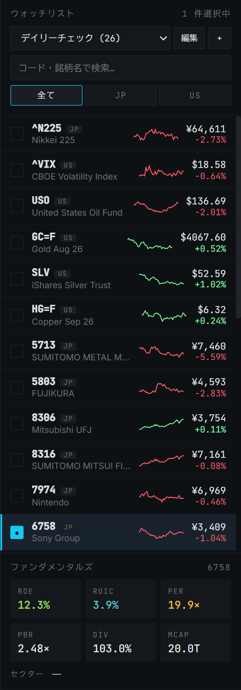
ウォッチリスト操作ボタン
| ボタン/要素 | 機能 |
|---|---|
| ドロップダウン（リスト名） | 複数のウォッチリストを切り替える。各リストの銘柄数が表示される |
| 編集 | 編集モードのオン/オフ切り替え。有効時はボタン表示が「完了」に変わり、銘柄追加フォームと削除ボタンが表示される |
| + | 新規ウォッチリストを作成する |
編集モード中の追加操作
| 操作 | 機能 |
|---|---|
| 名前変更 ボタン | ウォッチリストの名前を変更する |
| 削除 ボタン | 現在のウォッチリストを削除する（最後の1件は削除不可） |
検索・フィルター
- 検索ボックス: 銘柄コード・銘柄名・セクターで絞り込み検索ができます。
- [全て] [JP] [US] タブ: 市場（全市場 / 日本株 / 米国株）でフィルタリングします。
銘柄リスト
[チェック] コード 市場 │ スパークライン │ 価格
銘柄名 │ （直近推移） │ 変動率| 要素 | 説明 |
|---|---|
| チェックマーク | 選択状態。プライマリは「●」、2番目以降は「2」「3」と表示 |
| スパークライン | 直近の価格推移を小さなグラフで表示。上昇は緑、下落は赤 |
| 価格 / 変動率 | 最新の株価と前日比（%） |
銘柄行の操作
| 操作 | 動作 |
|---|---|
| クリック | 選択/解除のトグル（最大6銘柄まで選択可） |
| ダブルクリック | プライマリ銘柄に設定する |
| × ボタン（編集モード時） | リストから銘柄を削除する |
追加銘柄バナー（スクリーニングから遷移した場合）
ウォッチリストに存在しない銘柄をスクリーニング結果から選んだ場合、右パネル上部に一時的なバナーが表示されます。「＋リストに追加」ボタンで現在のウォッチリストへ正式に登録できます（2.3 参照）。
ファンダメンタルズ（基本情報）
プライマリ銘柄のファンダメンタル情報を表示します：
| 指標 | 内容 |
|---|---|
| ROE | 自己資本利益率（%） |
| ROIC | 投下資本利益率（%） |
| PER | 株価収益率（倍） |
| PBR | 株価純資産倍率（倍） |
| DIV | 配当利回り（%） |
| MCAP | 時価総額 |
| セクター | 業種 |
3.5 下部ステータスバー
チャートの現在の状態をテキストで常時表示します。
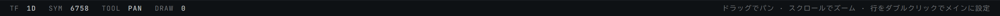
TF 1D | SYM AAPL · MSFT | TOOL PAN | DRAW 3
Drag to pan · scroll to zoom · double-click row to set primary| 情報 | 説明 |
|---|---|
| TF | 現在の時間軸 |
| SYM | 選択中の銘柄（「·」区切り） |
| TOOL | 現在の描画ツール |
| DRAW | チャート上の描画オブジェクトの数 |
4テクニカル指標
左パネルの「テクニカル分析」セクションで各指標をオン/オフします。
移動平均
メインチャートに重ねて表示されます。
| 指標 | 説明 | 表示色 |
|---|---|---|
| 単純移動平均線 5期間 | 5期間の単純移動平均 | 琥珀色 |
| 単純移動平均線 25期間 | 25期間の単純移動平均 | 水色 |
| 単純移動平均線 75期間 | 75期間の単純移動平均 | マゼンタ |
| 指数平滑移動平均線 20期間 | 20期間の指数移動平均（破線） | ライム |
オーバーレイ
メインチャートに重ねて表示されます。
| 指標 | 説明 |
|---|---|
| ボリンジャーバンド 20,2 | 期間20・標準偏差2のボリンジャーバンド |
| パラボリック SAR | トレンド転換シグナルをドットで表示 |
| 一目均衡表 | 一目均衡表（転換線・基準線・遅行線・雲） |
オシレーター
メインチャートの下のサブペインに表示されます。
| 指標 | 説明 | カスタムパラメータ |
|---|---|---|
| ストキャスティクス 14,3,3 | ストキャスティクス（%K・%D） | なし |
| MACD | MACDライン・シグナルライン・ヒストグラム | 短期 / 長期 / シグナル |
| RSI | 相対力指数（0〜100） | 期間 / OB / OS |
MACD パラメータの変更（デフォルト: 短期=12, 長期=26, シグナル=9）
左パネルの各入力欄に数値を直接入力して変更します。設定可能範囲：短期/長期 は 1〜200、シグナル は 1〜50。
RSI パラメータの変更（デフォルト: 期間=14, OB=70, OS=30）
設定可能範囲：期間 は 2〜200、OB は 50〜99、OS は 1〜49。
クイックプリセット
設定パネルの「クイックプリセット」から、よく使う指標の組み合わせをワンクリックで適用できます。詳細は 9. 設定パネル を参照してください。
5描画ツール
基本的な使い方
- 左パネルの「描画ツール」から使いたいツールをクリックして選択します。
- 必要に応じて「色」のスウォッチから描画色（白・黄・シアン・ピンク・ライムグリーン の5色）を選びます。
- チャート上で操作します（下表参照）。
- 描画が完了したら「パン / 選択」ボタンをクリックして通常の移動モードに戻ります。
各ツールの操作
| ツール | チャート上での操作 | 結果 |
|---|---|---|
| トレンドライン | ドラッグ（始点→終点） | 2点間を結ぶ直線 |
| 水平線 | 任意の場所をクリック | クリックした価格に水平の破線 |
| 垂直線 | 任意の場所をクリック | クリックした時点に垂直の破線 |
| 長方形 | ドラッグ | 半透明の矩形エリア |
| 楕円 | ドラッグ | 楕円形 |
| テキスト | クリック後、ダイアログに入力 | テキスト注釈 |
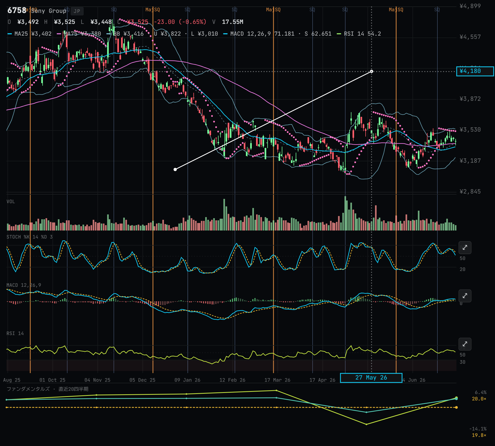
描画の選択・移動
「パン / 選択」ツールが有効な状態で、チャート上の描画をクリックすると選択されます（選択中は線が太く表示されます）。選択したままドラッグすると、その描画を移動できます。何もない場所をクリックすると選択が解除されます。
描画の色変更・アラート設定・削除（右クリックメニュー）
チャート上の描画を右クリックすると、その場にメニューが開きます。
| 項目 | 機能 |
|---|---|
| 色スウォッチ（5色） | 選択中の描画だけ色を変更する |
| アラートを設定 | 価格が「下抜け」または「上抜け」した際に通知するアラートを設定する |
| 削除 | この描画だけを削除する |
描画の削除（その他の方法）
- 描画を選択した状態で Delete または Backspace キーを押すと削除されます（テキスト入力中は無効）。
- 「全消去」ボタン（左パネル下部）でチャート上のすべての描画をまとめて削除します。
6パターン分析
上部バーの「パターン」タブに切り替えると、選択中のプライマリ銘柄のローソク足パターンを自動検出して一覧表示します。
画面構成
- 上部にパターン種別の絞り込みチップ、下にチャートとパターン一覧が並びます。
- 銘柄が未選択の場合は「銘柄を選択してください」と表示されます。
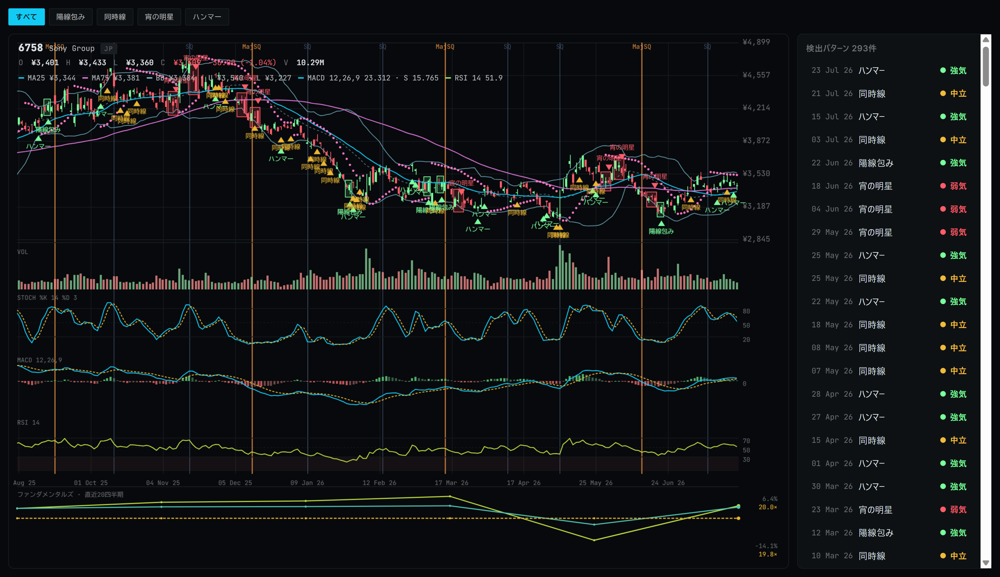
絞り込みチップ
チップは「すべて」と、方向（強気・弱気・中立）でまとめた3行に分かれています。選べるのは1つだけです。
| 方向 | チップ | 対象パターン |
|---|---|---|
| — | すべて | すべてのパターンを表示 |
| 強気 | 陽線包み | Bullish Engulfing |
| 強気 | 陽線はらみ | Bullish Harami |
| 強気 | ハンマー | Hammer |
| 強気 | 明けの明星 | Morning Star |
| 強気 | 上放れ並び赤 | Upside Gap Two White |
| 強気 | アイランドボトム | Island Bottom |
| 弱気 | 陰線包み | Bearish Engulfing |
| 弱気 | 陰線はらみ | Bearish Harami |
| 弱気 | 首吊り線 | Hanging Man |
| 弱気 | 宵の明星 | Evening Star |
| 弱気 | 下放れ二本黒 | Two Black Gapping |
| 弱気 | アイランド天井 | Island Top |
| 中立 | 同時線 | Doji |
検出されたパターンはチャート上にマーカー表示され、下部の一覧に日時・種別とともに列挙されます。
「上放れ並び赤」と「下放れ二本黒」の2つだけは継続を示すパターンで、矢印はトレンドが続く方向を指します。「同時線」は中立（買い方と売り方が拮抗した形）で、方向を示しません。残りの10種は反転パターンです。
矢印が下向きになるのは弱気シグナルだけです。中立の同時線は橙色の上向き矢印で描かれるので、上向き＝強気とは限りません。色（緑＝強気 / 赤＝弱気 / 橙＝中立）で見分けてください。
なお「ハンマー」は直前10本の下降（-5%以上）があった場合にのみ表示されます。上昇（+5%以上）のあとに同じ形が出た場合は「首吊り線」（弱気シグナル）として表示され、横ばいの場合はどちらも表示されません。
この ±5% というしきい値は日足を前提に決めています。分足では「10本で ±5%」が厳しすぎてハンマー・首吊り線がほとんど表示されず、週足・月足では逆にほとんどの形がどちらかに分類されます。日足以外での表示は目安として扱ってください。
7マクロダッシュボード
上部バーの「マクロ」タブに切り替えると、マクロ経済指標のダッシュボードが表示されます。
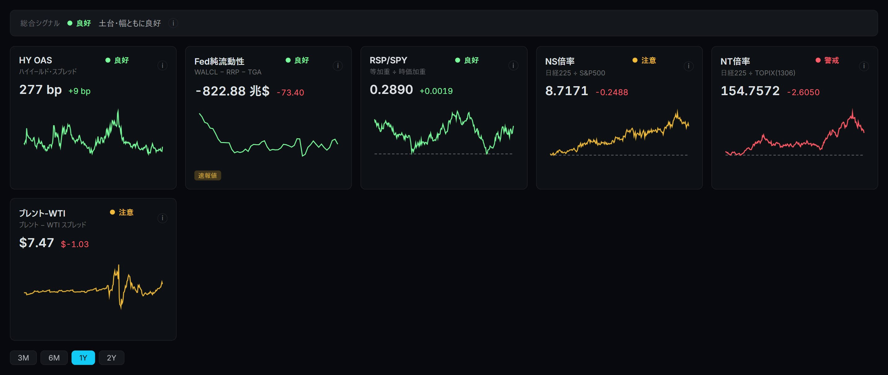
FRED_API_KEY 未設定の状態で、FRED を使う HY OAS と Fed純流動性が「データ取得不可」になり、yfinance ベースの4指標のみ稼働しています（部分稼働）。総合シグナル
画面上部に「総合シグナル」バッジが表示され、各指標の組み合わせから市場環境を4段階で判定します。
| バッジ | 意味 |
|---|---|
| 良好 | 土台・幅ともに良好 |
| 注意 | breadth または流動性の劣化に注意 |
| 警戒 | 後期サイクルの警戒シグナル |
| 取得不可 | 指標を取得できません |
指標カード
以下7つの指標がカード形式で表示されます。各カードには最新値・前回比・シグナルバッジ・折れ線チャートが含まれます。
| カード | 内容 | データソース |
|---|---|---|
| HY OAS | ハイイールド・スプレッド | FRED |
| Fed純流動性 | WALCL − RRP − TGA | FRED |
| RSP/SPY | 等加重 ÷ 時価加重 | yfinance |
| NS倍率 | 日経225 ÷ S&P500 | yfinance |
| NT倍率 | 日経225 ÷ TOPIX(1306) | yfinance |
| ブレント-WTI | ブレント − WTI スプレッド | yfinance |
| 10年-2年 | 米国債スプレッド（10年 − 2年、bp） | FRED |
FRED を参照する指標（HY OAS・Fed純流動性・10年-2年）は FRED_API_KEY が未設定の場合「データ取得不可」「FRED_API_KEY 未設定」と表示されます。設定パネルからキーを登録できます（9. 設定パネル）。yfinance ベースの4指標はキー不要で常に稼働します。
データが更新中で確定値でない場合は「速報値」、キャッシュの取得に失敗し古いデータを暫定表示している場合はその旨のマークが付きます。
期間切り替え
画面下部の 3M / 6M / 1Y / 2Y ボタンで表示期間を切り替えられます（既定は 1Y）。RSP/SPY・NS倍率・NT倍率のカードでは、期間内の最安値を示す基準線も表示されます。10年-2年のカードでは、逆イールドの境界である 0bp の破線が表示されます。
8スクリーニング
上部バーの「スクリーニング」タブに切り替えると、N字パターンによる銘柄スクリーニング機能が使えます。
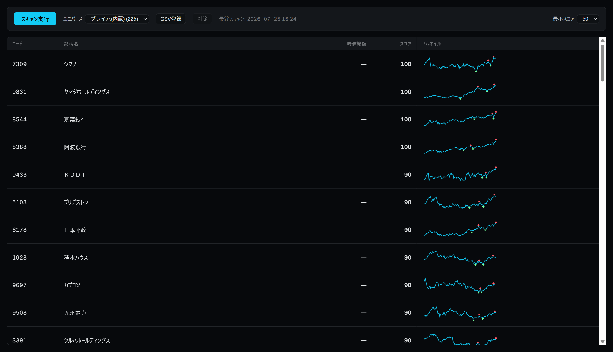
ツールバー
| 要素 | 機能 |
|---|---|
| スキャン実行 | 選択中のユニバース（銘柄群）に対してスキャンを開始する（実行中は「スキャン中…」表示） |
| ユニバース選択 | スキャン対象の銘柄群を選択する（下記参照） |
| 進捗表示 | スキャン実行中に「進捗 x/y」の形式で表示される |
| 最終スキャン日時 | 直近のスキャン完了時刻（未実行時は「未スキャン」） |
| 最小スコア | 結果を絞り込むスコアの下限（0 / 50 / 60 / 70 / 80 から選択、既定 50） |
ユニバース管理
- ドロップダウンから登録済みのユニバースを選択します（銘柄数が併記されます）。
- 「CSV登録」ボタンから CSV ファイル（
code,name,market_cap列。code以外は省略可）をアップロードして新しいユニバースを登録できます。 - 「削除」ボタンで選択中のユニバースを削除できます（内蔵の既定ユニバースは削除不可）。
結果一覧
| 列 | 内容 |
|---|---|
| コード | 銘柄コード |
| 銘柄名 | 銘柄名（CSVに無ければコードで代用） |
| 時価総額 | 兆/億単位で表示。取得不可の場合は「—」 |
| スコア | N字パターンの一致度（降順ソート） |
| サムネイル | 直近の値動きを示す小さなチャート |
結果行をクリックすると、その銘柄をチャート表示に切り替えます（ウォッチリスト未登録の銘柄は 2.3 の手順で追加できます）。
9設定パネル
上部バー右側の歯車アイコン（「設定」）をクリックすると、設定パネルが開きます。「閉じる」リンクで閉じられます。
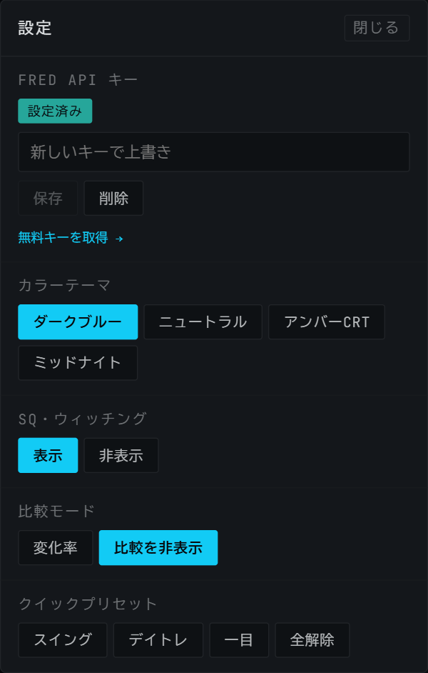
FRED API キー
- HY OAS・Fed純流動性の取得に使う FRED API のキーを登録できます。
- 状態バッジで「設定済み」「未設定」を確認できます。
- 入力欄にキーを貼り付けて「保存」をクリックします（登録済みの場合は上書き入力になります）。登録済みキーは「削除」ボタンで消去できます。
- 保存結果は「保存しました」「保存に失敗しました」で表示されます。
- OS の暗号化機能が利用できない環境では保存できない旨のメッセージが表示されます。
- 「無料キーを取得 →」リンクから FRED の登録ページに移動できます。
カラーテーマ
4種類のテーマから選べます：ダークブルー / ニュートラル / アンバーCRT / ミッドナイト。選択は自動的に保存されます。
SQ・ウィッチング
日足チャートの SQ・ウィッチング日マーカー（3.3）の表示/非表示を 表示 / 非表示 で切り替えます。
比較モード
複数銘柄比較時の折れ線表示方法を切り替えます（2.4）。
| 選択肢 | 内容 |
|---|---|
| 変化率 | 表示範囲の左端を基準にした上昇率・下落率で表示 |
| 比較を非表示 | 追加銘柄の折れ線を非表示にする |
クイックプリセット
よく使うテクニカル指標の組み合わせをワンクリックで一括設定できます。
| プリセット | 内容 |
|---|---|
| スイング | SMA25・SMA75・ボリンジャーバンド・ストキャスティクスをON |
| デイトレ | SMA5・EMA20・ストキャスティクス・パラボリックSARをON |
| 一目 | 一目均衡表のみON |
| 全解除 | すべての指標をOFF |
10アンインストール方法
方法1: Windowsの設定から削除
- スタートメニューを開き、「設定」→「アプリ」→「インストールされているアプリ」を開きます。
- 一覧から「KANATA Terminal」を探します。
- 右端の「…」メニューをクリックし、「アンインストール」を選択します。
- 確認ダイアログで「アンインストール」をクリックします。
方法2: コントロールパネルから削除
- スタートメニューで「コントロールパネル」を開きます。
- 「プログラム」→「プログラムのアンインストール」を開きます。
- 「KANATA Terminal」を右クリックし、「アンインストール」を選択します。
アンインストール後のデータについて
アンインストールしてもユーザーデータ（ウォッチリスト・設定など）は以下の場所に残る場合があります：
C:\Users\<ユーザー名>\AppData\Roaming\kanata\データを完全に削除する場合は、上記フォルダを手動で削除してください。
注意: フォルダを削除すると、登録したウォッチリストや設定がすべて失われます。必要な場合は削除前にバックアップしてください。